長期トレンド
JKMとJEPXシステムプライスの推移グラフ
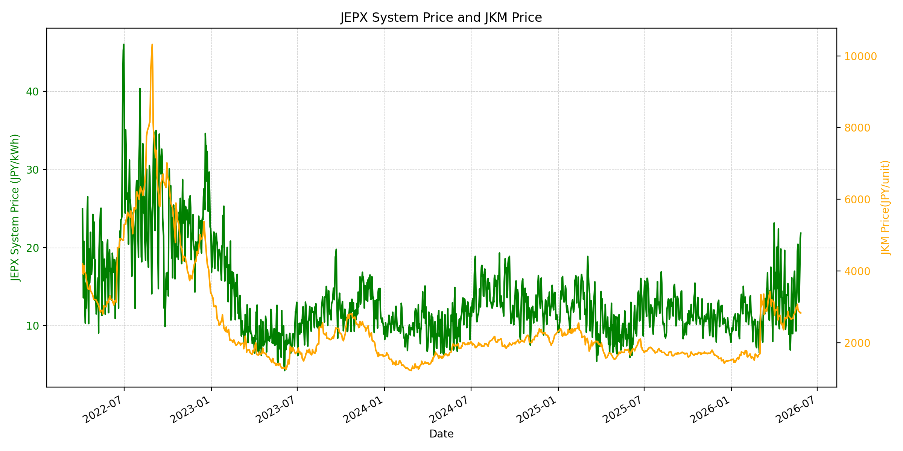
WTIの推移グラフ
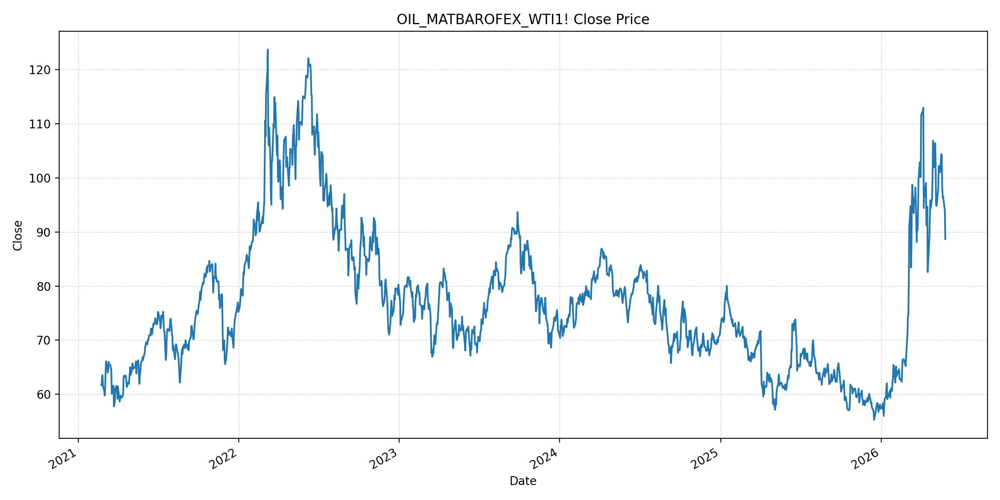
JEPXエリアプライスグラフ（直近一年分）
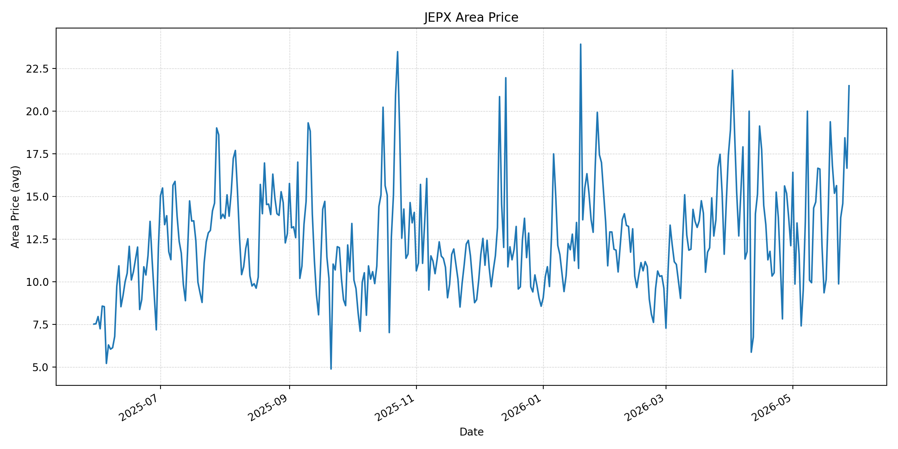
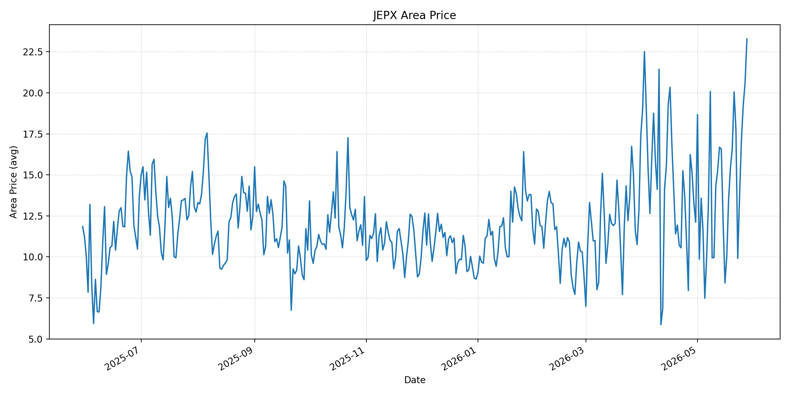
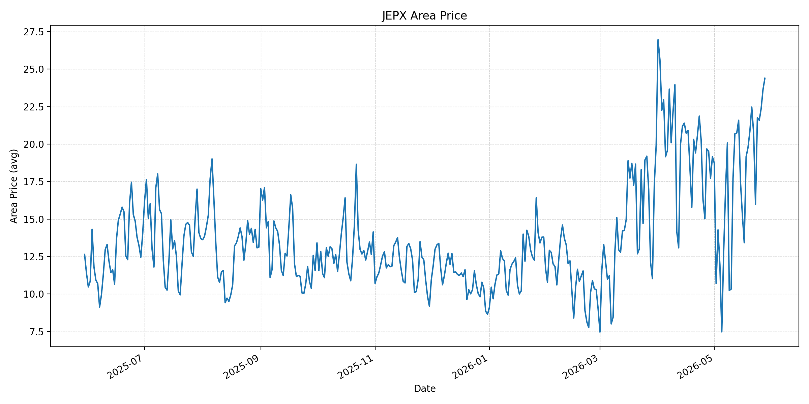
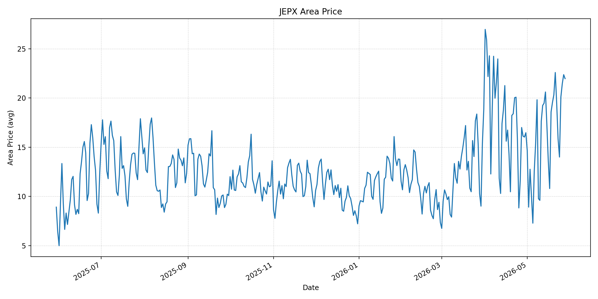
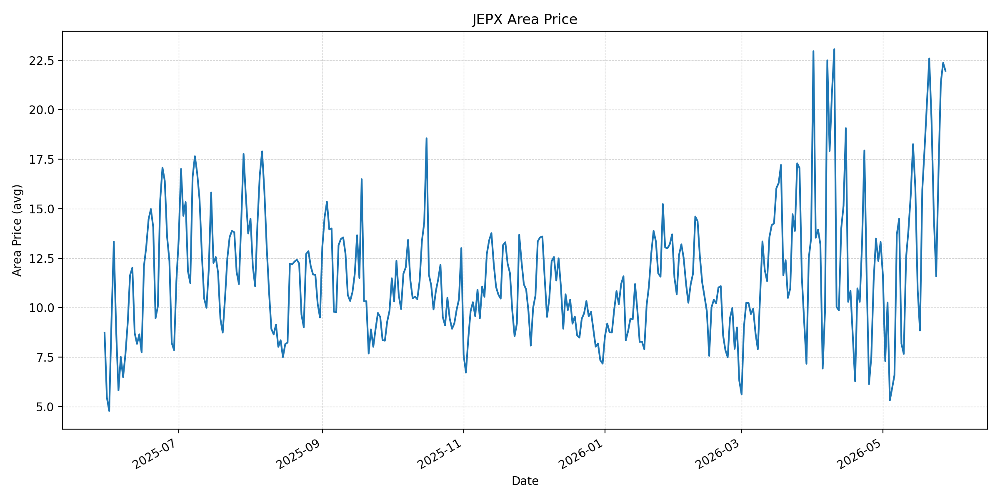
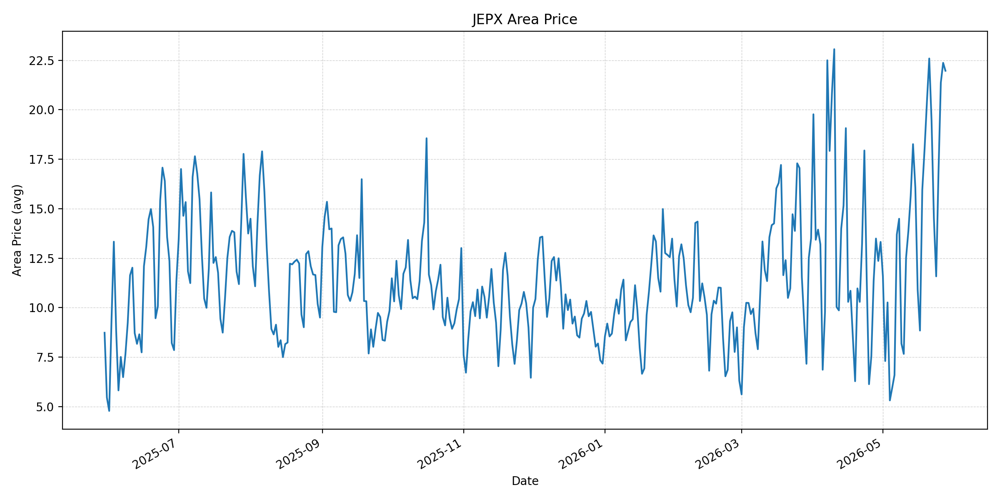
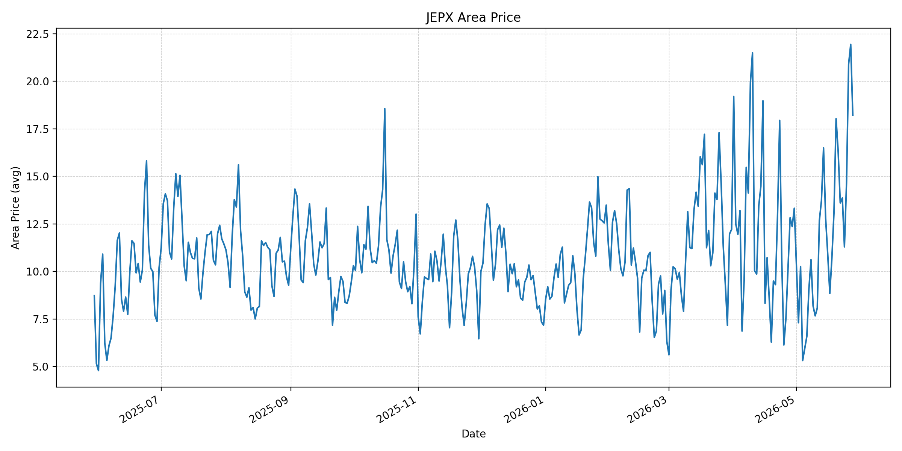
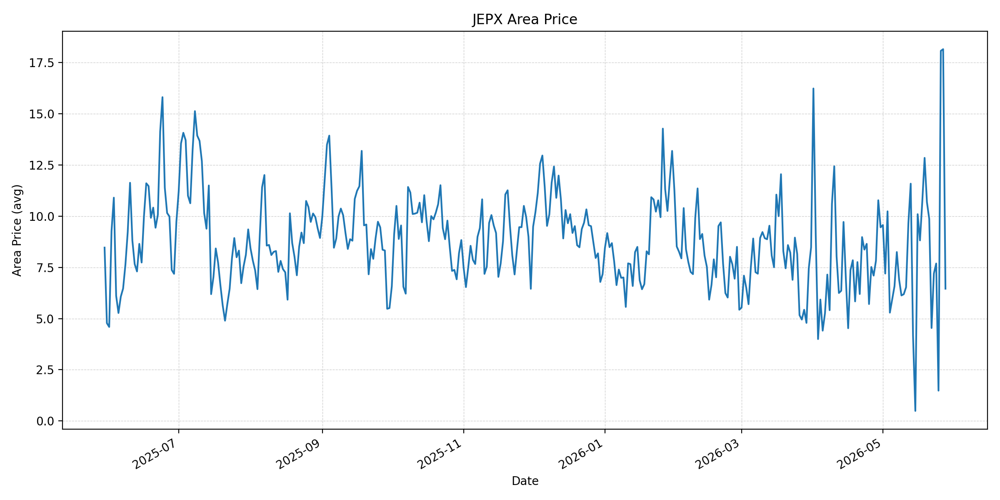
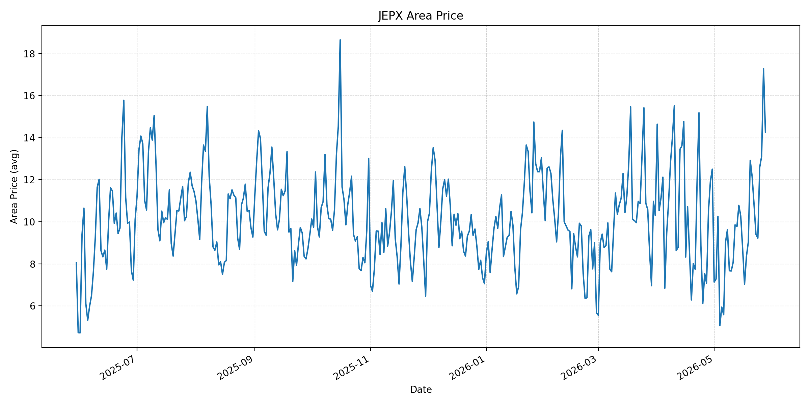
短期トレンド
JKMとJEPXシステムプライスの推移グラフ
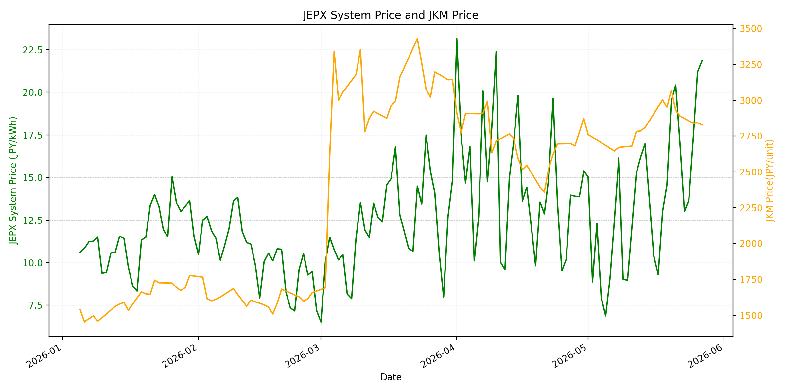
WTIの推移グラフ
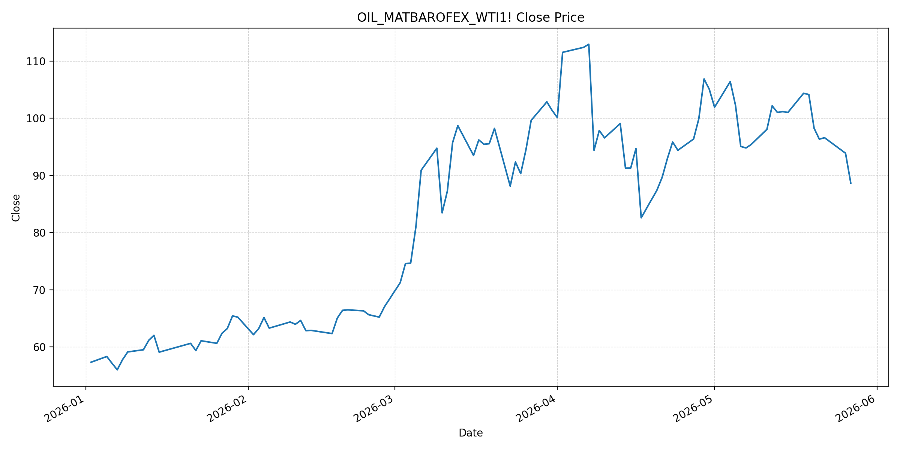
JEPXシステムプライス
JEPXは受渡日ベースの最新非空値で評価しています。最新値は 2026-05-28 分です。先週終値は 2026-05-21 時点の直近値、先月終値は 2026-04-30 時点の直近値で評価しています。
| エリア | 当日価格 | 前日価格 | 前日比（％） | 先週終値 | 先週比（％） | 先月終値 | 先月比（％） | 過去最高値 | 最高値比（％） |
|---|---|---|---|---|---|---|---|---|---|
| システム | 22.36 | 21.84 | 2.38 | 20.42 | 9.50 | 15.39 | 45.29 | 64.06 | -65.10 |
| 北海道 | 21.48 | 16.65 | 29.01 | 15.18 | 41.50 | 12.11 | 77.37 | 73.92 | -70.94 |
| 東北 | 23.29 | 20.61 | 13.00 | 20.06 | 16.10 | 12.11 | 92.32 | 84.92 | -72.57 |
| 東京 | 24.39 | 23.64 | 3.17 | 22.47 | 8.54 | 19.16 | 27.30 | 86.13 | -71.68 |
| 中部 | 21.97 | 22.37 | -1.79 | 22.59 | -2.74 | 16.47 | 33.39 | 52.06 | -57.80 |
| 北陸 | 21.97 | 22.37 | -1.79 | 22.59 | -2.74 | 13.32 | 64.94 | 46.48 | -52.74 |
| 関西 | 21.97 | 22.37 | -1.79 | 22.59 | -2.74 | 13.32 | 64.94 | 46.48 | -52.74 |
| 中国 | 18.21 | 21.94 | -17.00 | 16.30 | 11.72 | 13.32 | 36.71 | 46.48 | -60.83 |
| 四国 | 6.46 | 18.16 | -64.43 | 9.87 | -34.55 | 9.46 | -31.71 | 46.48 | -86.10 |
| 九州 | 14.25 | 17.29 | -17.58 | 12.15 | 17.28 | 12.50 | 14.00 | 40.54 | -64.85 |
LNG先物価格
最新値は 2026-05-27 の LNG(close) です。先週終値は 2026-05-20 時点の直近値、先月終値は 2026-04-30 時点の直近値で評価しています。
| 当日価格 | 前日価格 | 前日比（％） | 先週終値 | 先週比（％） | 先月終値 | 先月比（％） | 過去最高値 | 最高値比（％） |
|---|---|---|---|---|---|---|---|---|
| 2828.00 | 2842.00 | -0.49 | 3070.00 | -7.88 | 2874.00 | -1.60 | 10319.00 | -72.59 |
石油先物価格
最新値は 2026-05-27 の OIL(close) です。先週終値は 2026-05-20 時点の直近値、先月終値は 2026-04-30 時点の直近値で評価しています。
| 当日価格 | 前日価格 | 前日比（％） | 先週終値 | 先週比（％） | 先月終値 | 先月比（％） | 過去最高値 | 最高値比（％） |
|---|---|---|---|---|---|---|---|---|
| 88.68 | 93.89 | -5.55 | 98.26 | -9.75 | 105.07 | -15.60 | 123.70 | -28.31 |
ニュース
イラン情勢に関するニュース
- 2026年5月27日、APは、トランプ大統領がイランは「余力が乏しい状態で交渉している」と述べ、米中間選挙を理由に合意を急がない姿勢を示したと報じました。政権はホルムズ海峡再開と核能力低下を伴う合意を目指しています。 参照: AP, 2026-05-27
- 2026年5月28日、Reutersは、イラン国営テレビが米国との覚書草案を報じた一方、ホワイトハウスは「完全なねつ造」と否定したと伝えました。市場は合意期待を織り込みましたが、政治的な不確実性は残っています。 参照: ニューズウィーク日本版/Reuters, 2026-05-28
ホルムズ海峡経由の石油・LNGに関するニュース
- 2026年5月28日、Reutersは、米国とイランの紛争終結およびホルムズ海峡再開に関する枠組み報道を受け、ブレントが5.31％安、WTIが5.55％安となったと報じました。CSVのOIL(close)も 88.68 まで低下しています。 参照: ニューズウィーク日本版/Reuters, 2026-05-28
- 同Reuters記事では、イラン側報道として、1カ月以内にホルムズ海峡を通る商業航行を紛争前水準へ戻す案が含まれるとされました。ただし米側は否定しており、石油・LNG輸送の正常化は確認待ちです。 参照: ニューズウィーク日本版/Reuters, 2026-05-28
ホルムズ海峡経由でない石油・LNGに関するニュース
- 2026年5月27日、S&P Globalは、JERAが豪州Ichthys LNGのストライキリスクを吸収可能と見ている一方、豪州供給への依存を一部減らす可能性があると報じました。豪州LNGはホルムズ非経由の重要な調達源です。 参照: S&P Global, 2026-05-27
- S&P Globalは、豪州政府がLNG輸出業者に輸出量の20％相当を国内市場へ供給させる制度設計案を公表したことにも触れています。非ホルムズ供給は代替先ですが、政策リスクも同時に高まっています。 参照: S&P Global, 2026-05-27
日本国内のイラン戦争に関係するニュース
- 2026年5月27日、S&P Globalは、国内最大の発電事業者であるJERAが豪州Ichthys LNGの供給途絶リスクに対応できるとの見方を示したと報じました。日本の火力燃料調達には、ホルムズ以外のLNG供給安定性が重要です。 参照: S&P Global, 2026-05-27
- 過去24時間で、JEPX制度そのものを変更する国内の強い新規発表は確認できませんでした。直近の政府対応としては、経済産業省が2026年5月26日に、7月から9月の電気・ガス料金支援と夏季省エネ呼びかけを説明しています。 参照: 経済産業省, 2026-05-26
インサイト
ニュース事項による日本の電力市場への影響（短期：数日〜1週間）
- JEPXシステムプライスは 22.36 円/kWhで前日比 2.38%、先月比 45.29% です。OIL(close)は 88.68 と前日比 -5.55% まで下がりましたが、JEPXには燃料価格低下がまだ明確には反映されていません。
- 東京 24.39、東北 23.29、北海道 21.48 と東日本が高く、四国は 6.46 まで低下しました。原油安よりも、地域別の需給、太陽光出力、連系線制約が数日から1週間の価格差を左右しやすい局面です。
- LNGは 2828.00 と前日比 -0.49%、先週比 -7.88% です。JERAの豪州LNG対応余地は安心材料ですが、豪州の国内供給優先策は非ホルムズ調達の政策リスクであり、短期の燃料心理を完全には冷やしません。
ニュース事項による日本の電力市場への影響（長期：1ヶ月〜半年）
- ホルムズ再開観測でOILは先月比 -15.60% まで下がりました。ただしAPとReutersの報道では、米側が合意を急がず、覚書草案も否定しているため、1ヶ月以内の商業航行正常化はまだ確定シナリオではありません。
- 豪州LNGや米国・非中東原油への分散は中期的な安定化策です。一方で、豪州の国内ガス予約制度案のように、代替先にも政策リスクがあります。1ヶ月から半年では、ホルムズだけでなく非ホルムズ供給の契約条件と輸送余力を監視する必要があります。
- 政府の電気・ガス料金支援は小売料金のショックを緩和しますが、JEPX卸価格を直接下げるものではありません。システム価格が過去最高値比で -65.10% と低い一方、先月比では高いままなので、夏季需要期に向けてエリア別の高値継続リスクを分けて評価するのが妥当です。